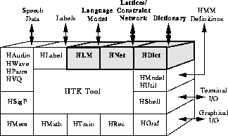

The preceding chapters have described how to process speech data and how to train various types of HMM. This and the following chapter are concerned with building a speech recogniser using HTK. This chapter focuses on the use of networks and dictionaries . A network describes the sequence of words that can be recognised and, for the case of sub-word systems, a dictionary describes the sequence of HMMs that constitute each word. A word level network will typically represent either a Task Grammar which defines all of the legal word sequences explicitly or a Word Loop which simply puts all words of the vocabulary in a loop and therefore allows any word to follow any other word. Word-loop networks are often augmented by a stochastic language model. Networks can also be used to define phone recognisers and various types of word-spotting systems.

Networks are specified using the HTK Standard Lattice Format (SLF) which is described in detail in Chapter 16. This is a general purpose text format which is used for representing multiple hypotheses in a recogniser output as well as word networks. Since SLF format is text-based, it can be written directly using any text editor. However, this can be rather tedious and HTK provides two tools which allow the application designer to use a higher-level representation. Firstly, the tool HPARSE allows networks to be generated from a source text containing extended BNF format grammar rules. This format was the only grammar definition language provided in earlier versions of HTK and hence HPARSE also provides backwards compatibility.
HPARSE task grammars are very easy to write, but they do not allow fine control over the actual network used by the recogniser. The tool HBUILD works directly at the SLF level to provide this detailed control. Its main function is to enable a large word network to be decomposed into a set of small self-contained sub-networks using as input an extended SLF format. This enhances the design process and avoids the need for unnecessary repetition.
HBUILD can also be used to perform a number of special-purpose functions. Firstly, it can construct word-loop and word-pair grammars automatically. Secondly, it can incorporate a statistical bigram language model into a network. These can be generated from label transcriptions using HLSTATS. However, HTK supports the standard ARPA MIT-LL text format for backed-off N-gram language models, and hence, import from other sources is possible.
Whichever tool is used to generate a word network, it is important to ensure that the generated network represents the intended grammar. It is also helpful to have some measure of the difficulty of the recognition task. To assist with this, the tool HSGEN is provided. This tool will generate example word sequences from an SLF network using random sampling. It will also estimate the perplexity of the network.
When a word network is loaded into a recogniser, a dictionary is consulted to convert each word in the network into a sequence of phone HMMs. The dictionary can have multiple pronunciations in which case several sequences may be joined in parallel to make a word. Options exist in this process to automatically convert the dictionary entries to context-dependent triphone models, either within a word or cross-word. Pronouncing dictionaries are a vital resource in building speech recognition systems and, in practice, word pronunciations can be derived from many different sources. The HTK tool HDMAN enables a dictionary to be constructed automatically from different sources. Each source can be individually edited and translated and merged to form a uniform HTK format dictionary.
The various facilities for describing a word network and expanding into a HMM level network suitable for building a recogniser are implemented by the HTK library module HNET. The facilities for loading and manipulating dictionaries are implemented by the HTK library module HDICT and for loading and manipulating language models are implemented by HLM. These facilities and those provided by HPARSE, HBUILD, HSGEN, HLSTATS and HDMAN are the subject of this chapter.